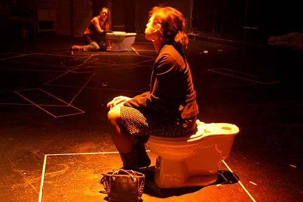

The last time I went to see a play was three years ago, and the woman to my right threw up onto the audience sitting in front of us. However, sitting in the seats of the Chopin Theater, awaiting the Sketchbook performances, I felt a surge of excitement as I prepared myself for what was about to come. There is just something fulfilling about a theatrical performance, some sort of entertainment that one cannot get from other creative mediums.
For instance, it can be written eloquently or photographed in the best of lights, but nothing quite says “I'm in love with a Yeti” quite like a tall, lithe woman sprinting across the stage into the arms of a hairy beast of a man, only to be taken down to the floor in a writhing and grinding attempt at lovemaking: she, in her substitute teacher's outfit, legs sprawled, and he, with his massive hairy body, grunting and pounding his body against hers on the stage floor. Or, take another of the Sketchbook shorts, this one called “Pots,” in which the lifestyles of two women are emphasized by the 20- foot gap between what is supposed to be adjoining bathroom stalls.
But this was more of an event than merely a play. Each skit, no more than 15 minutes each, contained a small snip it of something much larger. It were as if each story took place somewhere in the middle, often ending with the conflict unresolved. And then, as a final attraction, a prop from each short performance was attached to a rope and hoisted towards the ceiling, to dangle in the air as yet another visual element.
Artwork from local artists adorned the walls; there was even a large hula hoop construction alit above the seats, and although I cannot fathom why on earth it was created, it was pretty cool. Most of the artwork there wasn't your typical “arts and crafts” bullshit; you see at a lot of gallery walks, where someone believes they are a genius for gluing a photograph onto a canvas and then painting sloppily over it. Some actual talent went into most of these pieces, and all are for sale by means of a silent auction. Register to bid, for the buttons alone are worth the trouble. They are small peculiar illustrations, created to hide the identity of the bidder, and they are absolutely amazing. The suicidal-looking bunny is by far the best, and if you've ever enjoyed a Lenore comic, these are right up your alley.
| see more information and showtimes for sketchbook |
| see more pictures from sketchbook |